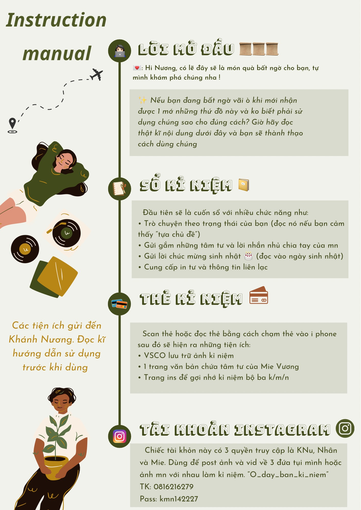

ALL OF LOVE
X

Phan Thiết, 00:00 9/9/2023
Dear Nương, đây sẽ là những dòng tâm tư mà tao muốn dành riêng cho mày và chỉ có mày mới có thể nhận được thôi . Cho phép Mie Zương được trình bày bằng văn bản và nhét nó vào cái thẻ bé xíu này nha, 1 Nơi riêng tư hơn tạm lánh lại những chuyến đi những kỉ niệm cùng mọi người. Ở đây chỉ có những kỉ niệm của tao với mày mà thôi, những chặng đường và cuộc hành trình mà tụi mình đã cùng nhau đi qua. Và xin phép cho những cảm xúc thực nhất mà tao chưa bao giờ nói được bộc bạch trên những con chữ mà tao đang gõ.
Sẵn sàng chưa?
Bắt đầu thôi!
Bao nhiêu năm rồi Nương nhỉ? Từ cái ngày mà tao rảo những bước bước chân đầu tiên vào trường mẫu giáo tao đã gặp được mày, một cô bé mà đối với tao luôn là hình mẩu lý tưởng của con nhà người ta, một cô bạn dễ thương nhưng cũng thật khó để chạm tới ( ý nói trái tim ko dễ tiếp cận ). Tao chẳng còn nhớ là bằng cách nào mà tao với mày có thể nói chuyện và chơi chung với nhau, trong kí ức của tao hiện giờ chỉ còn nhớ là khi tao vào lớp mần là tao đã biết đến mày như một cô công chúa, khá chảnh choẹ nhưng cũng rất nhiều tài lẽ và giỏi giang còn tao thì chỉ là một cô bé nông thôn bình thường không có gì nổi bật, cũng thật bất ngờ nhỉ khi mà 2 con người ấy lại là hàng xóm của nhau. Hôì con nít thì đi học cả 2 đứa chẳng chơi chung với nhau nhiều mấy, đa số là về nhà lâu lâu mới nói chuyện rồi sang nhà nhau chơi. Đã quá lâu để tao còn có thể nhớ về những ngày tháng ngây ngô khi mới gặp nhau ấy. Nhưng mà nghĩ lại thì ta đã luôn đồng hành và cùng hỗ trợ nhau trên mọi mặt trận mà nhỉ, từ vật chất tinh thần với cả các vấn đề học tập, tình cảm. Tao vẫn còn nhớ khi vừa lên cấp 1 tao nhớ ko lầm là tầm khoảng vào năm lớp 3 đã có một cô bé thích một bạn nam cùng lớp tên Đức Huy và có nhờ bạn hàng xóm cùng nhau gọi điện cho bạn nam đó để thổ lộ tình cảm 1 cách ẩn ý. Hình như tình huống truyện là bạn hàng xóm đóng giả vào vai em gái họ của bạn nữ kia và sau đó gọi điện và bày tỏ rằng chị của bạn hàng xóm đang rất thích bạn nam kia, dùng hẳn điện thoại của bạn hàng xóm gọiluôn mới chịu. Mối tình đầu đấy, mà bây h bạn nam kia lớn lên trông cũng đẹp chai style vãi lờ nên là xem ra hồi đó mới có tí tuổi đầu mà mắt thẩm mĩ cũng chuẩn phết đấy. điểm ko nhầm thì hầu như những dịp đặc biệt tao với mày luôn đồng hành cùng nhau á, tuy cấp 1 học khác lớp nhưng về nhà vẫn là những người bạn, Mày có còn nhớ những cái ngày mà tao với mày cùng nhau đi tập thể dục rồi ra chợ ăn sáng không? lúc đấy còn đam mê hình dán búp bê thay đồ, búp bê có khớp với cả mấy cái bong bóng thổi xà phòng hay bong bóng keo đồ đó. Sáng nào cũng vậy chỉ có 2 đứa thôi hôm thì đạp xe 5 rưỡi hẹn dạo mấy vòng chợ cùng xem mấy cô chú dọn hàng rồi cùng đi ăn sáng, có hôm làm biến thì 2 đứa lội bộ đi dạo thôi rồi vào ăn, mày có nhớ không hồi đó còn rủ nhau để dành tiền rồi tiết kiệm tiền ăn sáng tùm lum hết, ngày mẹ cho có 2 chục ăn sáng mà ra chợ ăn bánh quai vạc có 5-10 ngàn chẳng hiểu sao hồi đấy lại có thể nhịn ăn như vậy được, vài hôm rủng rỉnh túi thì lại ăn thêm cốc si rô hay cốc sâm nhãn nhục, hồi đấy KNu xịn lắm cái quán cái đường nào chỗ nào trong chợ bán gì cũng biết, Mie Zuong biết được nhiều chỗ ăn cũng là nhờ KNu. Còn có cái hồi mà mình chơi chung với thằng Tuấn thằng Hoàng, cứ rủ đi tập thể dục miết những chả có đứa nào dậy đúng giờ cả hôm thì 2 đứa con trai dậy đi réo 2 đứa mình, còn hôm thì mình dậy trước rồi đi đập cửa nhà bọn nó rồi đi thể dục xong ăn sáng, còn kéo nhau sang nhà chơi nữa, kể ra những lúc ấy vui thật, mặc dù h chả còn chơi với nhau nhưng nghĩ lại khoảng thời gian đó đáng chứ, đáng để có những người bạn mới, đáng để có những trải nghiệm mà ha. Rồi tới cái hồi lên cấp 2 ( thời kì huy hoàng và nhiều cảm xúc nhất của hai cô bé ngây thơ ) lại có biết bao nhiêu là chuyện, nào là thích rồi ghét nhau cho đến cãi lộn và rồi chúng ta chọn làm lành và thật quí giá với tao khi tình bạn này vẫn còn mãi cho đến tận bây giờ. Tao với mày đã từng cãi nhau rất to cơ, cãi nhau đến mức văng tục rồi chia rẽ nhau gần như cả năm lớp 6, thực sự là trẻ trâu mà tuổi trẽ bồng bột quá cơ mà xem ra đứa nào cũng có cái cớ và lý do riêng của mình, một đứa thì quá lậm vào tình yêu đứa kia thì lại ko biết nên chọn lựa thế nào. Thật ra khoảng thời gian ấy tao đã khóc rất nhiều chả hiểu sao chỉ vì 1 thằng con trai mà chị em mình cắn lộn dữ thần thế, cắn nhau tơi bời luôn đến nổi còn lôi luôn cả Tiến Đạt vào, haizzz nhắc Tiến Đạt là hồi đó tao thấy nghi rồi, nghi là nó thích m rồi và y như rằng luôn tỏ tình rớp rẻn làm hết hồn luôn, mà mẻ máu chiến thật đợt đấy tao khóc vì níó hơi nhiều đấy, nặng lời với tui quá mà. Đúng là dại trai thiệc chứ ( coan c.i.u che mờ coan mắt mất tiêu, giỡn chớ hầu đó ngây thơ thấy sợ chỉ dám nghĩ đến đám cưới linh thôi chứ chưa có động phòng hoa trúc đâu ) những chuyện tuy bé thế thôi mà lại làm 2 cô bé cấp 2 phải đau lòng và suýt đánh mất nhau, nhưng thật may duyên nợ ta chưa hết! Những chuyện trước đó trẻ con nhỉ? cơ mà thử nghĩ nếu chúng không xảy ra thì liệu tao với mày có thể gắn kết và có nhiều hồi ức đến như bây giờ hay không. Một sự đánh đổi và trải nghịệm thực sự đáng có. À đúng rồi cái hồi mới vào cấp 2 ấy tao không nghĩ là sẽ chung lớp với mày đâu, cứ ngỡ là học bình thường ai mà có dè mẹ đăng kí cho thi vô lớp chọn ultr luôn, may thay bạn cũng thi vào và rồi ánh mắt ta chạm nhau hihihi, duyên trời định rồi nên khỏi cãi ha, 4 năm bên nhau trãi qua bao sóng gió mà mỗi ngày sau xe tui vẫn có 1 bà hàng xóm được đèo đi học chung đó thôi ( những cuốc xe định mệnh ha gì á ). Đến hết năm lớp 9 thì lại chuẩn bị mỗi đứa một nơi, mặc dù tụi mình đã cùng nhau thi ra ngoài này ( Trần Hưng Đạo ) cơ mà lại có 1 đứa lại phải quay về, cơ mà ko sao chỉ là học xa nhau thôi mà chứ tụi mình vẫn là hàng xóm mà phải hog? Cuối tuần Mie Z cũng về mà, tuy là ko phải tuần nào cũng đi chơi với KNu đc nhưng mà thực sự mấy lúc đi chơi đc với KNu rất vui ý. Tụi mình đã có rất nhiều kĩ niệm bên nhau ha. Hồi đợt đi thi cũng vui thật, t với m còn hí ha hí hửng đi quay vlog rì viu khạch sạn ( cái tủ lạnh đầy ụ thức ăn, ta nói đi thi mà như đi nghỉ dưỡng bồi bổ sức khoẻ đồ ăn ko là đồ ăn, từ bánh trái, trái cây, sữa rồi tới probi đủ luôn ) rồi còn cùng nhau ôn bài, được mẹ Hoàng mua cho mỗi đứa 1 bịch đầy ụ bánh với cả còn đc bao ăn bulgulogi nữa, duma Minh Hoàng nướng choa ăn ngon vãi hihi, tối về còn call cho Tiến Đạt rồi hát karaoke om sòm, m có nhớ không tao với mày còn dũng cảm xách chiếc dép đi đập bà tiểu cường từ đâu lẻn vô phòng nữa ( ko sợ ko sợ ko sợ ), cái hồi tối trước khi thi văn tao còn nhớ là 3 đứa lôi đầu xuống sảnh khách sạn ngồi học, trời thì mưa mà cứ ngồi học rồi dò bài nhau, tao còn chả thuộc tác giả với năm sáng tác đúng là chuyên văn dỏm, rồi còn cái ngày thi toán thì lôi nhau ra ban công ngồi học cơ mà ko biết là học hay nói chuyện xong hồi gục hết luôn ủa alo ạh, các bạn còn tỉnh táo để thi cử trứ, cảnh đó mà ông Phúc ổng biết chắc lặt nhẹ hết 3 cái đầu tụi mình. ULTR tao còn nhớ là có lúc mới zua nhận phòng tao còn đọc nhầm cái tên khách sạn là Deluxe mà tớ đọc ra Durex ôi mẹ ơi lạy hồn thế mà cũng nhầm huhu đầu với chả óc nghĩ gì không biết sợ thiệt. Nhưng mà qua kì thi ấy dù cho kết quả có như thế nào thì đó cũng là một trải nghiệm đáng để thử mà ha nên là hãy luôn nhớ về những kĩ niệm vui vẻ như thế nhé. Nhớ về chúng cũng như đang nhớ về tụi tao vậy á.
Tao thực sự nhớ những khoảng khắc ấy, cứ ngây thơ hồn nhiên mà vui chơi chẳng nghĩ ngợi gì mày ạ, chẳng nghĩ là có một ngày tao phải xa cô bạn hàng xóm đến nửa vòng trái đất.
cứ nghĩ đến việc từng ngày chúng ta đã lớn lên với nhau như thế nào và giời đây lại sắp đến giây phút chia xa mà lòng ta hẩn lại vài nhịp. Tao luôn coi mày là cô bạn thân đáng quý đấy à không không thân nữa mà là tri kỷ mới phải, cho nhau từng ấy những giá trị cơ mà nên là đừng quên tao nghe chưa, đây là lệnh nghiêm cấm hành vi ko thực hiện theo á.
Mỗi lần đi chơi tao luôn hướng mắt về phía tụi mày, làm sao mà tao lại có một đám bạn vừa dễ thương, vừa báo lại vừa giỏi như thế này, thật biết ơn khi ông trời đã sắp xếp cho chúng ta gặp nhau, gặp nhau để biết thích, biết ghét, biết quý và cuối cùng là biết thế nào là những ngừoi bạn thực sự. Tụi mình đã cùng nhau trải qua rất rất nhiều thứ từ những dramma ở trường học cho đến cảm giác thích nhau, cãi nhau rùm beng, cùng nhau say xỉn, cùng nhau phấn đấu học tập, cùng nhau trải nghiệm cuộc sống, cùng nhau nói những câu chuyện người lớn, rồi những câu chuyện cho tương lai, những phút giây deep lặng đến sâu lắng cho đến cái cảm giác vui vẻ vì được đồng hành cùng nhau trong những chuyến đi. Chúng ta cùng nhau trải qua tất cả và sau cùng là cùng nhau trưởng thành, nhưng có lẽ khoảng thời gian sắp tới mỗi đứa chúng ta phải tự bước đi trên con đường của mình rồi, nhưng không sao, một ngày nào đó các đường thẳng song song ấy rồi sẽ lại gặp nhau tại một ngã rẽ nào đó mà đúng không? Tao biết rằng không gì có thể là mãi mãi nhưng tin chắc những thứ giá trị và kỉ niệm của tụi mình đã từng vẽ và tạo nên sẽ vẫn luôn ở đó, luôn tồn tại trong 1 phần ký ức của mỗi cá nhân mỗi đứa tụi mình. Những chuyến đi băng rừng vượt biển, từ thành thị đến nông thôn đưa tụi mình đến gần với nhau hơn, để tụi mình hiểu nhau hơn và rồi để trưởng thành hơn mà có thể tự bước đi, giống như nó đang nhấp nhử nói rằng là muốn có những cuộc chơi tiếp theo thì mỗi đứa chúng ta nhất định sau này phải thành công, phải cố gắng độc lập để rồi khi gặp lại nhau mình sẽ lại vẽ tiếp bức tranh còn đang dang dở này, tiếp tục làm đầy và điền khuyết vào cái thanh xuân còn chưa trọn vẹn của tụi mình, vẽ nên chúng bằng những chuyến đi, những chuyến phiêu lưu, những trải nghiệm mới hơn nữa nha. Nhất định sau này phải thành công cả đó! Rồi mình sẽ lại gặp nhau ở một tương lai gần, à mà nhớ thi thoảng về thăm Việt Nam nha, ko phải là đi là biệt tăm luôn đâu, mày không về là tao book vé, vượt biên qua bắt mày về à.
Sang bên đấy rồi nhất định phải mạnh mẽ lên hơn nghe chưa, mày có quyền được buồn, được khóc, có thể dạo quanh đâu đó, nhưng đừng đi quá xa nhé, đừng gục ngã, đừng bỏ lại tất cả mà đi. Bởi vì phía sau mày còn nhiều yêu thương lắm, và... đôi khi những chuyện không thành là do vũ trụ đang bảo vệ mày đấy. Sẽ có những đoạn đường mày buộc phải vừa đi vừa khóc, nhưng rồi tất cả sẽ ổn thôi. Nên là nghe tao này qua bên đó dẫu cho có hơi đắt đỏ một chút nhưng tuyệt đối không được lơ là sức khoẻ, trộm vía thay là sức đề kháng mày không yếu như Duyên nên tao cũng đỡ lo phần nào, nhưng mà vẫn phải chăm cho kĩ vào nghe chua, đông có gió lạnh thì phải bận ấm, hè có oi bức thì về Việt Nam tao dắt đi biển. Ăn uống đồ cũng không được nhịn, sau có ra ở riêng 1 thân 1 mình cũng phải càng biết chăm cho bản thân hơn vì lỡ có bất trắc cũng ko ai hay biết lại thiệt thòi. Thời gian đầu ở đất khách thì ưu tiên tìm kiếm người thân quen hay đồng hương để dễ có gì hổ trợ biết không. Tao biết là có thể tao dặn thừa nhưng vẫn cứ nói đấy, m nhất định phải tiếp thu vào, có cô bạn đi xa thì tôi lo muốn chết đi ấy.
Chưa hết đâu, tao muốn ôn lại hết những kĩ niệm của m với tao ở đây luôn cơ, và đương nhiên là không chỉ có bao nhiêu đây mà còn có cả những gì trong cuốn sổ nữa, những trang những dòng t viết cho mày đều là nội tâm tao cất giấu bây lâu nay đó. Nương à cảm ơn mày, cảm ơn mày vì đã luôn ở bên tao, những khi tao khóc, tao tức giận, tao buồn tủi, vui vẻ hay nulon m đều ở cạnh tao sang sẽ cùng tao mọi thứ, nếu nói phải xa một người bạn như mày thì thật sự rất rất khó với tao. Cảm ơn vì những gì mày làm cho tao, đôi lúc phải chịu đựng cái tính dở hơi của tao, cảm ơn mày vì đã chịu ở laị bên tao chịu để cho tao được làm bạn với mày, và cảm ơn vì đã tô màu cho thanh xuân của tao. Không biết rằng chúng ta có thể đồng hành cùng nhau trong bao lâu nữa, nhưng mày sẽ luôn là một tia nắng ấm áp tồn tại trong thanh xuân rực rỡ của tao. Cảm ơn mày vì tất cả!
“ Cho phép cảm xúc của My Vương được ích kỉ bộc lộ với giọng điệu trách móc vài dòng sau đây nha :
Mỗi khi tao viết điều gì về mày, tao đều đang khóc. Mày thử nghĩ mày có thể trải qua cái cảm giác cả lồng ngực bị bóp nghẹn, còn lý trí thì bảo không được buồn, không có gì phải khóc, chỉ là ai rồi cũng phải tạm thời rời đi thôi không? Nếu có thể ngăn cản thì tao sẽ hét lớn rằng tao không muốn mày đi, không cho phép mày rời xa tao. Mày vĩnh viễn không thể nào hiểu được cảm giác viết từng chữ đều như giáng từng nhát từng nhát dao xuyên tim vì mọi thứ đã quá quen thuộc giờ buộc phải rời xa đâu, nó khó chịu lắm chẳng dễ dàng chút nào với những cô gái như tao phải chấp nhận rời xa những thứ quen thuộc mà tao hằng trân quý nhất.
Những con chữ tao viết ra, những dòng chứ sên súa nhưng lại mang giọng điệu trách móc này đều mang theo cả linh hồn, cả tình cảm và cả tấm lòng của tao. Những gì mày đã và đang đọc là tất cả nước mắt trong lòng của tao! tất cả chỉ chờ ngày mày quay trở về một lần nữa ”
Thân gửi cô hàng xóm tri kỷ
Vương Ngọc Quỳnh My
_Selena.Vuong_